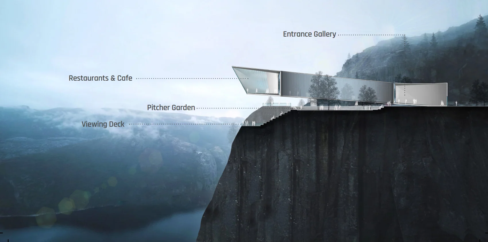
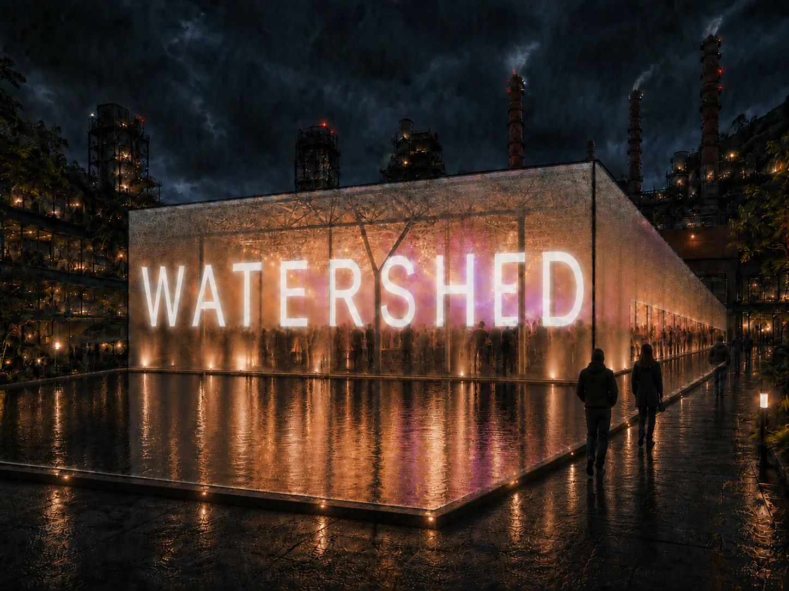
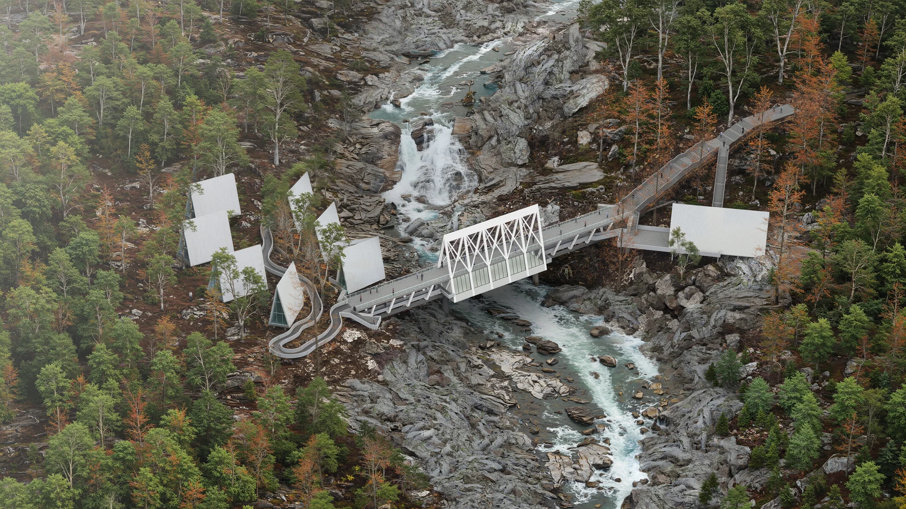
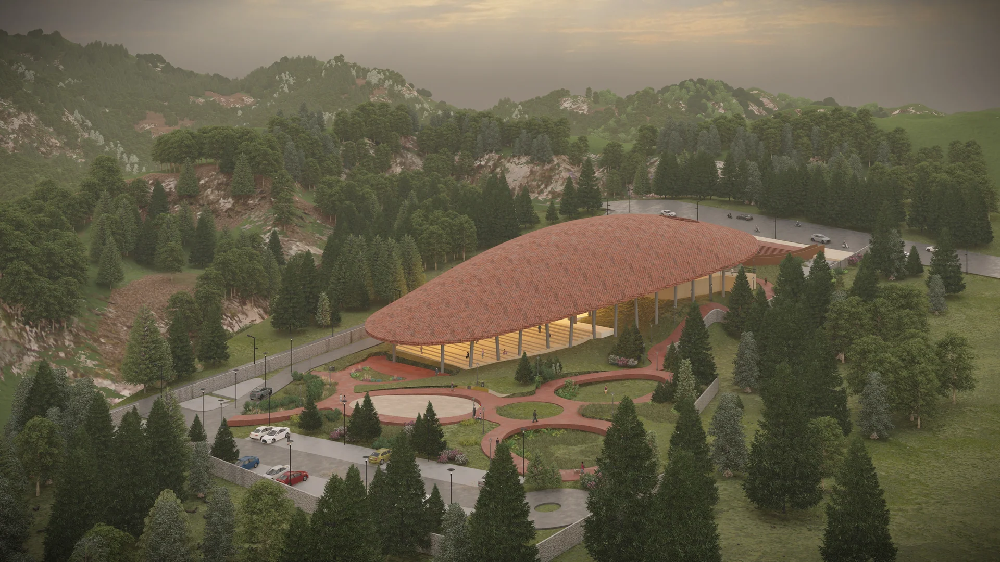
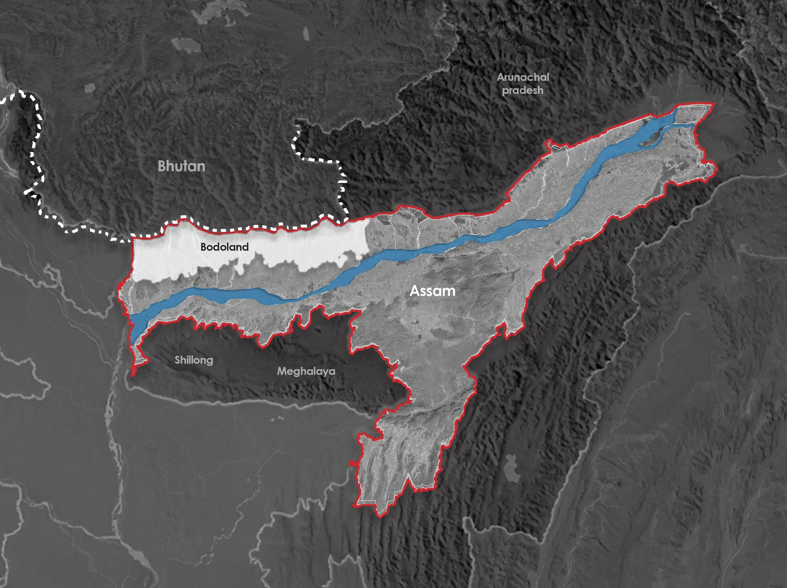
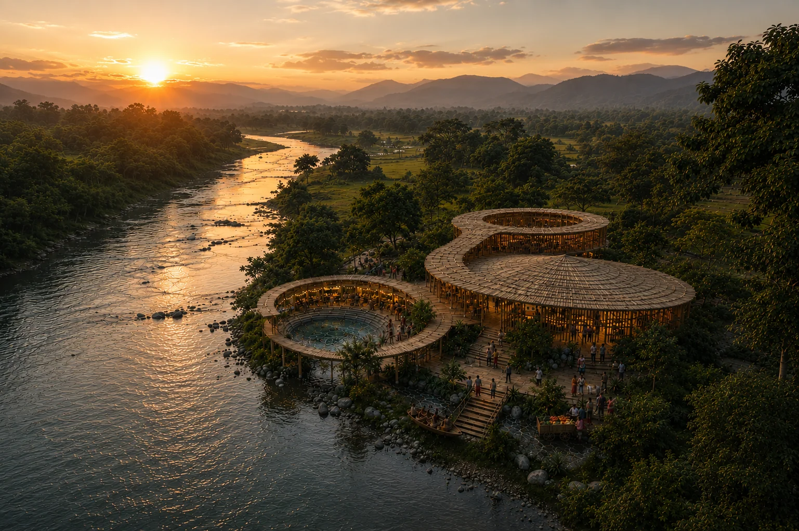
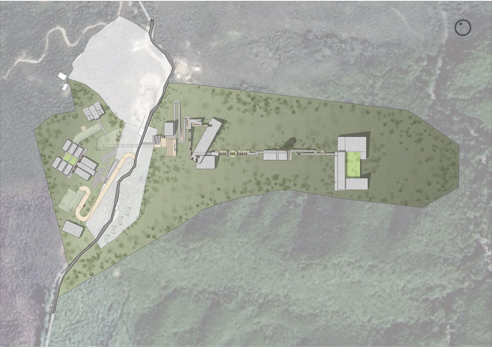
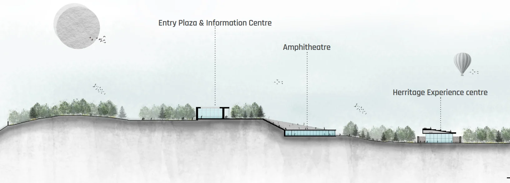
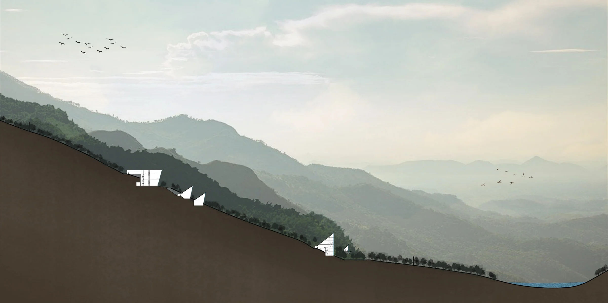
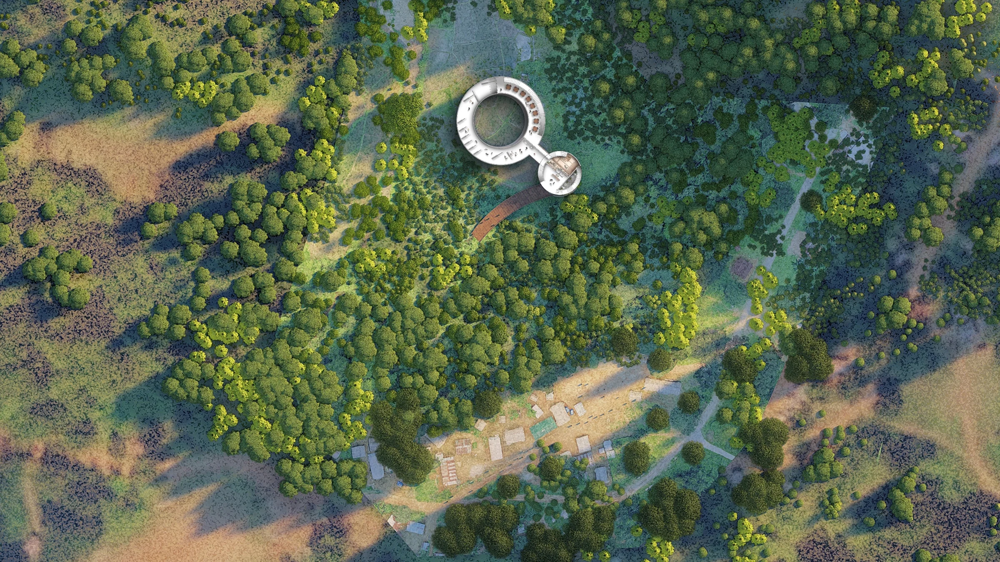

Sohra Culture & Experience Centre
Sohra, Meghalaya
The complete portfolio
Sohra, Meghalaya

Umiam, Meghalaya

Muzaffarpur, Bihar

Tura, Meghalaya

Shillong, Meghalaya

New Shillong, Meghalaya

Mandalgre, Meghalaya

Nongnah, Meghalaya

Sohra, Meghalaya

Tura, Meghalaya

Tura, Meghalaya

Bodoland, Assam

Bodoland, Assam

Baksa, Bodoland, Assam

Bogamati, Bodoland, Assam

Tura, Meghalaya

Shillong, Meghalaya

Tura, Meghalaya

Sakal-Aduma, Meghalaya

Jakrem / Lawblei, Meghalaya

Meghalaya

Meghalaya

Nokrek region, Meghalaya

Godenggre, Meghalaya

Rohbah, Meghalaya

Near Siju, Meghalaya

Dabit Ampangom, Baghmara, Meghalaya
No matching projects. Try a different name, programme or place.